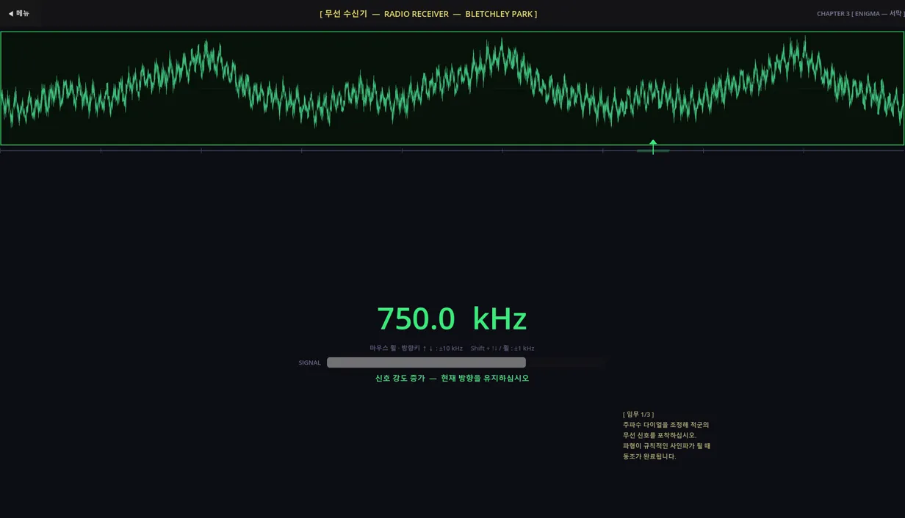
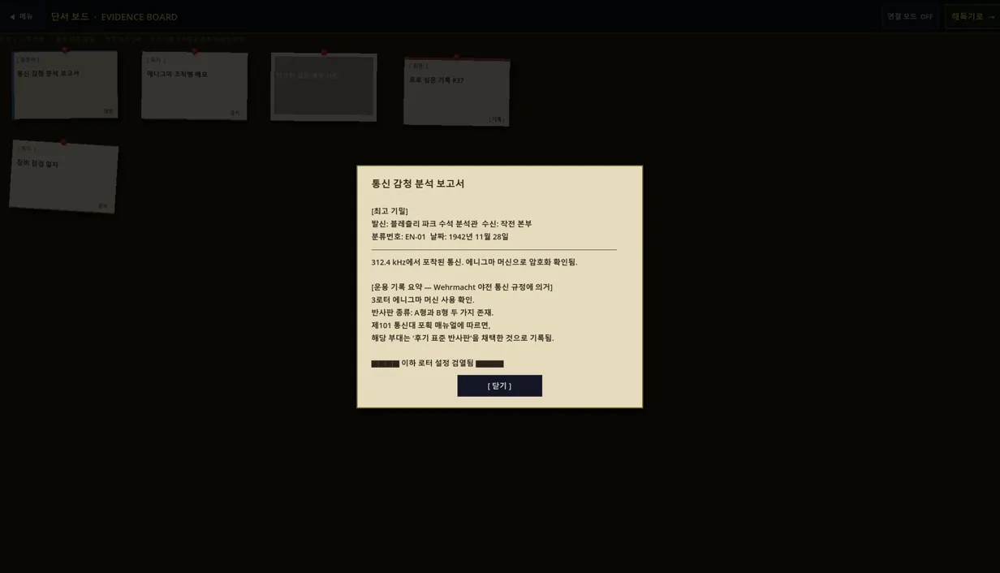
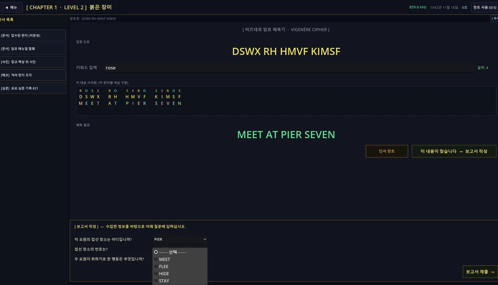

ENIGMA
1942년 블레츨리 파크에서 암호 해독가가 되어 실제 2차대전 암호를 풉니다.
설치 없이 브라우저에서 무료로 플레이할 수 있습니다.
착임 브리핑
1942년 11월 1일, 오전 06:12.
블레츨리 파크, 분석동 7호실.
해리슨: "신참이군. 앉아."
"오늘 새벽에 독일 놈들 신호 하나를 포착했어. 가장 기초적인 방식이야. 알파벳을 몇 칸씩 밀어서 암호화하는 거지. 애들 장난 수준."
그 "애들 장난"에서 시작해 에니그마 머신까지, 실제 2차대전 암호 다섯 가지가 차례로 당신 책상에 올라옵니다.
작전 절차

1. 무선 수신기 다이얼을 조정해 적군 신호를 포착합니다. 동조가 맞으면 화면에 SIGNAL LOCKED가 뜹니다.
2. 단서 보드 압수된 문서와 사진을 검토합니다. 열쇠는 늘 단서 안에 있습니다.
3. 암호 해독기 이동값을 추정해 해독하고, 보고서를 제출합니다. 틀리면 "재검토 요망"이 뜹니다.수록 암호
챕터마다 3개 레벨, 총 15 스테이지. 성적에 따라 엔딩이 갈립니다.
직접 풀어 보기
본편 첫 스테이지의 감청문입니다. 회전자를 돌려 직접 해독해 보십시오.
개발 일지
블레츨리 파크의 해독실을 게임으로 옮기며 남긴 기록입니다. 라디오 감청 화면을 만든 4월 8일부터 시작합니다.
-
2026년 4월 8일
아무렇게나 돌려도 잡히는 다이얼
시저 암호 해독기와 튜토리얼은 그 전에 완성해 두었고, 이날은 라디오 감청 화면과 단서 보드를 만들었습니다. 신호를 잡고 단서를 모아 해독한 뒤 보고서를 내는 흐름이 이때 처음으로 끝까지 이어졌습니다.
그런데 다이얼을 아무렇게나 돌려도 미세 조정을 할 틈도 없이 정답 주파수에 걸렸습니다. 목표 주파수가 다이얼을 한 번 돌릴 때 움직이는 폭과 같은 10 kHz 단위였기 때문입니다. 그래서 목표를 1 kHz 단위로 정하되 10의 배수는 피하게 했습니다. 신호가 잡히기 시작하는 범위는 45 kHz로 넓히고, 동조가 끝나는 범위는 1 kHz로 좁혔습니다.
이제는 10 kHz씩 돌리며 파형이 흔들리는 구간을 찾은 다음, 1 kHz씩 미세 조정해야 신호가 잡힙니다.
-
2026년 4월 9일 ~ 11일
텍스트 게임처럼 보이던 화면
4월 8일에 처음 이어진 화면들은 2D 게임인데도 글자와 버튼만 늘어서 있어서 텍스트 게임처럼 보였습니다. 버튼은 패널 테두리에 바짝 붙어 있어 눈에 잘 띄지도 않았고 잘 읽히지도 않았습니다.
그래서 4월 9일에 모든 화면에 넉넉한 여백을 두고, 짙은 군청색 바탕에 금색 제목과 테두리를 쓰는 색 체계를 정했습니다. ENIGMA 소개 페이지의 군청 바탕과 금색 글씨도 그때 정한 색입니다.
4월 11일에는 단서 보드를 다시 그렸습니다. 카드마다 조금씩 기울이고 자리를 흐트러뜨려 코르크 보드에 꽂아 둔 것처럼 보이게 했고, 사진 카드는 폴라로이드처럼 아래 테두리를 두껍게 했습니다.
-
2026년 4월 9일
지시문 대신 1942년의 문서
처음 쓴 단서는 '이동값 단서: 요일 번호'처럼 게임이 플레이어에게 대놓고 일러 주는 지시문이었습니다. 너무 직설적이고 어색해서 전부 다시 쓰기로 했습니다.
새 단서는 1942년의 군사 문서처럼 보이게 썼습니다. 훈령에는 분류번호와 검열 표시를 넣고, 병사의 쪽지에는 투덜거리는 말 사이에 쓸모 있는 정보를 묻었습니다. 포로는 횡설수설하다가 자기도 모르게 단서를 흘립니다. 단서 안에서 게임 규칙을 설명하지 않는다는 원칙도 이때 정했습니다.
같은 날 게임의 첫 장면도 만들었습니다. 소개 페이지 위쪽의 착임 브리핑이 그 장면입니다.
첫 레벨의 찢긴 쪽지에는 "W 선생이 또 수치를 바꿨다. 이번 주는 수요일 기준이래."라고 적혀 있습니다.
-
2026년 4월 10일
풀고 나서 허무하지 않게
해독한 문장이 짧으면 풀고 나서도 허무했습니다. 그래서 평문을 늘려 더 긴 문장이 드러나게 했습니다. 단일 치환 암호의 평문은 두 배 넘게 늘렸는데, 빈도 분석은 글자가 충분히 많아야 통하기 때문입니다. 같은 세 글자 낱말이 세 번 나오게 해서 THE를 짐작할 실마리도 만들었습니다.
해독이 끝나면 찍히는 도장도 고쳤습니다. 처음에는 납작하게 눌린 도장이 좌우로 펼쳐지는 모양이라 도장을 찍는 느낌이 나지 않았습니다. 지금은 도장이 위에서 떨어져 종이에 닿는 순간 살짝 눌렸다가 튀어 오릅니다.
-
2026년 4월 10일
단서는 한 조각씩만
단서의 초안은 Claude Code가 썼는데, 답을 그대로 드러내는 경우가 많았습니다. 이날 찾은 문제도 모두 답을 너무 쉽게 내주는 쪽이었습니다. 시저 암호를 소개하는 화면의 예시가 첫 챕터의 정답 그대로였고, 에니그마 해독기는 처음부터 정답 설정으로 열렸습니다. 에니그마 챕터에서는 사진 한 장에 설정이 전부 적혀 있었고, 힌트도 사실상 정답이었습니다.
그래서 단서 하나가 답의 한 조각만 주도록 다시 나눴습니다. 로터 순서는 사진에서, 초기 위치는 조작병의 메모에서 찾고, 반사판은 분석 보고서와 포로의 말을 맞춰 봐야 알 수 있습니다. 해독기는 일부러 틀린 값에서 시작하게 했고, 설명 화면의 예시는 정답과 상관없는 낱말로 바꿨습니다.
이날 퍼즐 설계 원칙을 개발 문서로 정리했습니다. 단서끼리 같은 정보를 되풀이하지 않고, 힌트는 다음 추론으로 가는 방향만 알려 준다는 원칙도 이 문서에 있습니다. 문서 맨 앞에는 제가 정한 이 게임의 방향이 한 문장으로 적혀 있습니다.
"정보를 편하게 제공하는 것이 목표가 아니라, 추론의 과정 자체가 재미여야 한다."
-
2026년 4월 10일
칭찬 없는 작전 결과 보고서
해독에 성공하면 그 해독이 전쟁에서 무엇을 바꿨는지 알려 주는 작전 결과 보고서를 넣었습니다. 보고서에는 실제 사령부 문서처럼 전과와 숫자만 적고, 플레이어를 칭찬하는 문장은 쓰지 않았습니다.
보고서는 타자기로 치듯 한 글자씩 찍히고, 마침표와 줄바꿈에서는 조금 더 오래 멈춥니다. 끝낸 작전은 작전 일지 화면에 차례로 쌓입니다. 같은 날 진행 상황을 자동으로 저장하게 해서, 게임을 다시 켜도 이어서 할 수 있습니다.
첫 레벨의 보고서에는 "독일군 새벽 기습 경보를 받은 경비대는 3분 만에 진지를 재편성했다. 적 돌격정 4척이 어둠 속으로 퇴각했다."라는 문장이 나옵니다.
-
2026년 4월 11일
세 레벨과 암호 박물관
챕터마다 입문, 보통, 심화 세 레벨을 두는 구조로 바꾸고, 다섯 번째 암호인 플레이페어를 넣어 열다섯 레벨을 채웠습니다.
같은 날 메인 메뉴에서 들어가는 암호 박물관을 만들었습니다. 이야기와 상관없이 다섯 가지 암호를 직접 만져 볼 수 있는 곳입니다. 에니그마 화면은 글자 하나가 플러그보드와 로터 세 개, 반사판을 지나 되돌아 나오는 길을 열 단계로 나눠 차례로 보여 줍니다. 이 열 단계 표시는 Claude Code가 구현 방법을 제안하다가 처음 생각보다 커진 아이디어입니다.
-
2026년 4월 11일
이름만 치환 암호였던 레벨
단일 치환 챕터의 첫 레벨은 사실 모든 글자를 여덟 칸씩 민 암호였습니다. 시저 암호와 다를 게 없었던 셈입니다. 그래서 키워드로 치환표를 만드는 진짜 치환 암호로 바꾸고, 단서 네 장도 새로 썼습니다. 셋째 레벨도 둘째 레벨의 이야기가 이어지도록 처음부터 다시 만들었습니다.
-
2026년 4월 11일 ~ 12일
답을 가리키지 않는 카드
모든 레벨에 가짜 단서를 섞었습니다. 퍼즐과 상관없는 카드지만, 이동값처럼 보이는 숫자를 적어 두거나 치환표처럼 보이는 낙서를 남겨 그럴듯한 오답으로 이끕니다.
그런데 가짜 단서가 오히려 진짜 답을 담고 있던 경우를 두 번 찾았습니다. 비즈네르 둘째 레벨의 가짜 목록에는 진짜 키가 들어 있었고, 첫 챕터 셋째 레벨의 식단표에는 실제 이동값과 같은 숫자가 적혀 있었습니다. 둘 다 다른 내용으로 바꿨습니다.
다음 날에는 가짜 단서가 가리키는 답을 고르면 단서를 다시 검토하라는 안내가 따로 뜨게 했습니다. 해독을 마치면 어느 카드가 가짜였는지 알려 주는 해설도 나옵니다.
개발 문서에는 가짜 단서를 넣는 이유를 "모든 단서가 정답을 향해 정렬되어 있으면 퍼즐이 아니라 안내서다."라고 적어 두었습니다.
-
2026년 4월 11일 ~ 12일
암호문은 게임이 계산한다
그때까지 암호문은 게임 밖에서 따로 계산해 레벨 데이터에 옮겨 적었습니다. 에니그마 둘째와 셋째 레벨의 암호문은 한동안 검증하지 못한 임시 값으로 남아 있기도 했습니다.
이 무렵 데이터에서 암호문을 빼고, 레벨을 불러올 때 게임이 평문과 설정으로 암호문을 직접 계산하게 바꿨습니다. 감청할 주파수도 데이터에 적지 않고 판마다 무작위로 정하게 했습니다. 라디오 잡음도 이때 넣었는데, 목표 주파수에 가까워질수록 잦아듭니다.
-
2026년 4월 12일
글자 수만 세어도 보이는 답
보고서 문항의 선택지는 낱말마다 글자 수가 제각각이었습니다. 대부분의 암호문은 낱말 사이를 띄운 채로 나오기 때문에, 해독하지 않고 낱말 길이만 맞춰 봐도 답을 짐작할 수 있었습니다.
그래서 오답도 정답과 같은 글자 수의 낱말로 고르기로 했습니다. 소개 페이지의 '직접 풀어 보기'에 나오는 DUSK, DAWN, NOON, DARK도 그렇게 맞춘 네 낱말인데, 처음에는 DARK 자리에 MIDNIGHT가 있었습니다.
같은 날 열다섯 레벨에서 모은 별의 수에 따라 엔딩이 세 가지로 갈리게 했습니다.
-
2026년 4월 13일
분위기보다 읽히는 글씨
처음에는 본문에 나눔명조를 쓰고, 제목과 도장에는 타자기 글씨를 닮은 영문 글꼴을 썼습니다. 명조로 옛 문서 분위기를 내려던 것인데, 게임 화면에서는 잘 읽히지 않았습니다.
그래서 처음 넣은 뒤 20분 사이에 글꼴을 네 번 바꿨습니다. Noto Sans KR 하나로 묶었다가 더 잘 읽히는 한컴 고딕 Bold로 옮겼고, 라이선스를 생각해 OFL로 공개된 나눔고딕 Bold로 다시 바꾼 뒤 가장 굵은 ExtraBold로 정했습니다. 줄 간격도 넓히고, 메뉴 버튼과 암호 박물관 설명 글씨도 키웠습니다.
-
2026년 6월 15일
브라우저 창에 맞춘 화면
두 달 뒤에는 GitHub Pages에서도 바로 플레이할 수 있게 했습니다. 저장소에 올리면 GitHub Actions가 Godot으로 웹 버전을 만들어 자동으로 배포합니다. 처음 연 웹 버전은 화면이 잘려서, 전체 화면이던 설정을 창 모드로 바꾸고 브라우저 창 크기에 맞춰 비율을 지킨 채 늘고 줄게 했습니다.
다음은 글씨 크기였습니다. 1920x1080 기준으로 짠 화면이 브라우저 창 안에서 줄어들어 글씨가 작았습니다. 그래서 기준 해상도를 1280x720으로 낮춰 같은 창에서 모든 요소가 1.5배로 보이게 했습니다.
그러자 라디오 화면의 임무 표시가 가운데 내용과 겹치고, 메뉴는 화면 아래로 넘쳐 잘렸습니다. 한때 1920x1080으로 되돌렸다가 1600x900으로 타협하기도 했지만, 글씨를 키우려던 처음 목적대로 1280x720으로 정했습니다. 그 대신 넘치는 화면을 하나씩 고쳐서, 메뉴는 넘치면 스크롤되게 하고 임무 표시는 화면 아래쪽 줄로 옮겼습니다.
-
2026년 6월 15일 ~ 16일
웹에서만 깨지는 별
웹 버전에서는 별과 화살표 같은 기호가 네모 칸으로 깨졌습니다. PC에서는 운영체제의 글꼴이 빠진 글자를 대신 채워 주지만, 웹으로 내보낸 게임에는 그런 글꼴이 없기 때문입니다. 그래서 Noto Sans KR을 모든 글꼴의 대체 글꼴로 등록했고, 기본 글꼴과 Noto Sans KR 어디에도 없는 기호 세 개는 비슷한 다른 기호로 바꿨습니다. 해독 완료 도장의 별점은 도장만 다른 기본 글꼴로 그리고 있어서 16일에 따로 고쳤습니다.
보고서를 제출한 버튼이 키 입력을 계속 받고 있어서, 스페이스바를 누를 때마다 도장 연출이 다시 재생되는 버그도 있었습니다. 이 버그를 고치면서 연출 중에 누르는 스페이스바와 엔터는 타자기 글을 건너뛰는 키로 정했습니다.
작업 기록은 2026년 4월 8일부터 6월 16일까지 남아 있고, GitHub 저장소에는 4월 12일부터 커밋이 29개 쌓였습니다.
만든 사람: soomin007. 함께 쓴 도구: Claude Code(코드와 단서 초안)
"완벽한 해독. 블레츨리 파크가 당신을 주목합니다."